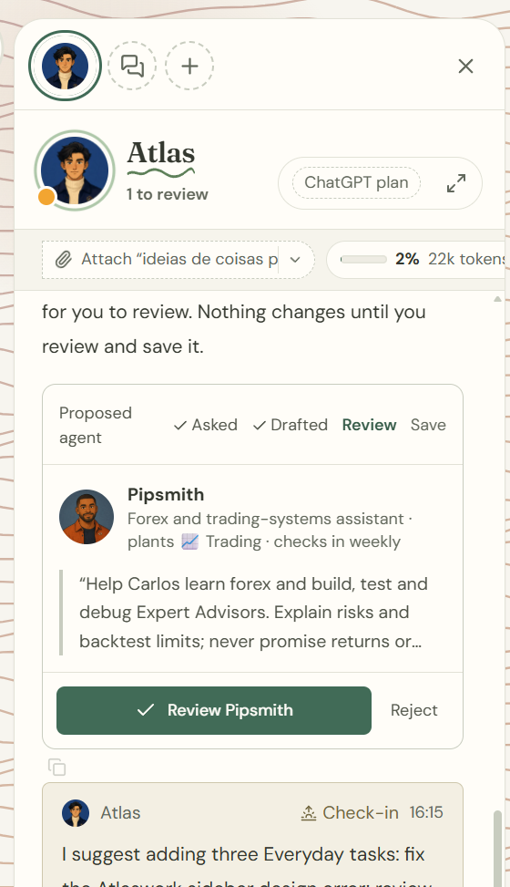

Chat panel: three alternatives
Each panel below runs on the same demo conversations at the real side-panel size (360 by 780). Click through them: switch chats, open the menus, review the cards, send a message. Then leave a verdict under each and pick parts in the table at the end.
What makes today's panel hard to read
F1The same face twice at the top. The strip's selected avatar and the name card's portrait both show Atlas, and every reply repeats him a third time beside his name.F2Chrome takes almost half the height. Strip 67px, name card 87px, context row 46px and composer 182px: 382 of 820px on desktop, before any message.F3Session and model facts sit in three places. "ChatGPT plan" in the header; note, session dots, tokens and New session in the context row; "Proactive, with undo" under the box.F4The strip's buttons don't say what they do. All chats and Start a room are the same dashed circle; the plus starts a room, not a new chat, and New session lives a row lower.F5Three frames around one check-in. A tinted card, its own "Atlas · Check-in · 16:15" header, then the proposal card inside the message.F6The draft card crams a four-step tracker beside its title, and the copy button floats alone between cards. The note chip cuts mid-word ("ideias de coisas p").
Today
Your screenshot: strip, name card, context row, transcript and composer stacked in five bands.
- For comparison. Findings F1 to F6 above.

A · One header line
Closest to today. Strip and name card merge into one row, so the face you talk to shows once and the other chats sit beside it. Session, context and model fold into one meter in the composer.
- Smallest change; every current control keeps a home.
- Room for messages grows by about 170px.
- Only three other chats fit in the row; the rest are under the ellipsis.
B · Switcher and tray
Like a messenger. The name is the switcher: tap it for every chat, the ones waiting on you first. Proposals and questions collect in a "Waiting on you" tray above the box, so a decision never scrolls away.
- The most room for the conversation, and nothing to decide gets lost up the scroll.
- Switching chats takes two taps instead of one.
- Reviewing moves out of the message into the tray: a new place to learn.
C · Crew rail
Bolder. Chats become a slim rail of faces down the left edge, like the sidebar's roster, and the main column is only the conversation, its name in large Fraunces with no second portrait. Session details fold into a drawer above the box.
- Any chat is one tap away, and every face shows what waits on you.
- The rail costs 56px of the 360px width.
- Phones would need the rail as a top row.
Mix and match
The parts are independent. Pick the version you want of each; leave a row empty if you don't mind.
| Part | Today | A | B | C |
|---|---|---|---|---|
| Switching chatsstrip · faces in the header · name as switcher · rail | ||||
| Who you're talking toname card · one line · name button · large name, no portrait | ||||
| Session, context and modelcontext row · session meter · context meter · drawer | ||||
| Names and faces on messagesevery reply · rooms only · rooms only · faces in the margin | ||||
| Things to reviewcards in the message (Today, A, C) · tray above the box (B) | ||||
| Composer and attaching a notechip row · chip in the box · plus menu · chip in the drawer |